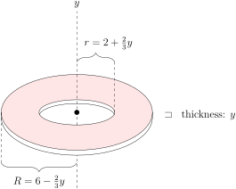
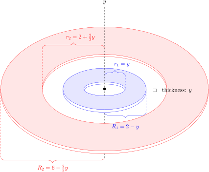

Section 6.6 Volumes
Another simple 1 application of integration is computing volumes. We use the same strategy as we used to express areas of regions in two dimensions as integrals — approximate the region by a union of small, simple pieces whose volume we can compute and then then take the limit as the “piece size” tends to zero.
In many cases this will lead to “multivariable integrals” that are beyond our present scope 2 . But there are some special cases in which this leads to integrals that we can handle. Here are some examples.
Example 6.6.1. Cone.
Find the volume of the circular cone of height \(h\) and radius \(r\text{.}\)
Solution: Here is a sketch of the cone.

We have called the vertical axis \(x\text{,}\) just so that we end up with a “\(\dee{x}\)” integral.
-
In what follows we will slice the cone into thin horizontal “pancakes”. In order to approximate the volume of those slices, we need to know the radius of the cone at a height \(x\) above its point. Consider the cross sections shown in the following figure.

At full height \(h\text{,}\) the cone has radius \(r\text{.}\) If we cut the cone at height \(x\text{,}\) then by similar triangles (see the figure on the right) the radius will be \(\frac{x}{h}\cdot r\text{.}\)
-
Now think of cutting the cone into \(n\) thin horizontal “pancakes”. Each such pancake is approximately a squat cylinder of height \(\De x=\frac{h}{n}\text{.}\) This is very similar to how we approximated the area under a curve by \(n\) tall thin rectangles. Just as we approximated the area under the curve by summing these rectangles, we can approximate the volume of the cone by summing the volumes of these cylinders. Here is a side view of the cone and one of the cylinders.

-
We follow the method we used in Example 6.5.1, except that our slices are now pancakes instead of rectangles.
- Pick a natural number \(n\) (that we will later send to infinity), then
- subdivide the cone into \(n\) thin pancakes, each of width \(\De x=\frac{h}{n}\text{.}\)
- For each \(i=1,2,\cdots,n\text{,}\) pancake number \(i\) runs from \(x=x_{i-1}=(i-1)\cdot\De x\) to \(x=x_i=i\cdot\De x\text{,}\) and we approximate its volume by the volume of a squat cone. We pick a number \(x_i^*\) between \(x_{i-1}\) and \(x_i\) and approximate the pancake by a cylinder of height \(\De x\) and radius \(\frac{x_i^*}{h}r\text{.}\)
- Thus the volume of pancake \(i\) is approximately \(\pi \left( \frac{x_i^*}{h}r\right)^2 \De x\) (as shown in the figure above).
- So the Riemann sum approximation of the volume is\begin{align*} \text{Area} &\approx \sum_{i=1}^n \pi \left( \frac{x_i^*}{h}r\right)^2 \De x \end{align*}
- By taking the limit as \(n \to \infty\) (i.e. taking the limit as the thickness of the pancakes goes to zero), we convert the Riemann sum into a definite integral (see Definition 6.1.9) and at the same time our approximation of the volume becomes the exact volume:\begin{gather*} \int_0^h \pi \Big(\frac{x}{h}r\Big)^2\dee{x} \end{gather*}
Our life 3 would be easier if we could avoid all this formal work with Riemann sums every time we encounter a new volume. So before we compute the above integral, let us redo the above calculation in a less formal manner.
-
Start again from the picture of the cone
and think of slicing it into thin pancakes, each of width \(\dee{x}\text{.}\)


-
The pancake at height \(x\) above the point of the cone (which is the fraction \(\frac{x}{h}\) of the total height of the cone) has
- radius \(\frac{x}{h}\cdot r\) (the fraction \(\frac{x}{h}\) of the full radius, \(r\)) and so
- cross-sectional area \(\pi \big(\frac{x}{h}r\big)^2\text{,}\)
- thickness \(\dee{x}\) — we have done something a little sneaky here, see the discussion below.
- volume \(\pi \big(\frac{x}{h}r\big)^2\dee{x}\)
As \(x\) runs from \(0\) to \(h\text{,}\) the total volume is
\begin{align*} \int_0^h \pi \Big(\frac{x}{h}r\Big)^2\dee{x} &=\frac{\pi r^2}{h^2}\int_0^h x^2\dee{x}\\ &=\frac{\pi r^2}{h^2} \bigg[\frac{x^3}{3}\bigg]_0^h\\ &=\frac{1}{3}\pi r^2 h \end{align*}
In this second computation we are using a time-saving trick. As we saw in the formal computation above, what we really need to do is pick a natural number \(n\text{,}\) slice the cone into \(n\) pancakes each of thickness \(\De x = \frac{h}{n}\) and then take the limit as \(n \to \infty\text{.}\) This led to the Riemann sum
So knowing that we will replace
when we take the limit, we have just skipped the intermediate steps. While this is not entirely rigorous, it can be made so, and does save us a lot of algebra.
Example 6.6.2. Sphere.
Find the volume of the sphere of radius \(r\text{.}\)
Solution: We'll find the volume of the part of the sphere in the first octant 4 , sketched below. Then we'll multiply by \(8\text{.}\)
-
To compute the volume,

we slice it up into thin vertical “pancakes” (just as we did in the previous example).
-
Each pancake is one quarter of a thin circular disk. The pancake a distance \(x\) from the \(yz\)-plane is shown in the sketch above. The radius of that pancake is the distance from the dot shown in the figure to the \(x\)-axis, i.e. the \(y\)-coordinate of the dot. To get the coordinates of the dot, observe that
- it lies the \(xy\)-plane, and so has \(z\)-coordinate zero, and that
- it also lies on the sphere, so that its coordinates obey \(x^2+y^2+z^2=r^2\text{.}\) Since \(z=0\) and \(y \gt 0\text{,}\) \(y=\sqrt{r^2-x^2}\text{.}\)
-
So the pancake at distance \(x\) from the \(yz\)-plane has
- thickness 5 \(dx\) and
- radius \(\sqrt{r^2-x^2}\)
- cross-sectional area \(\frac{1}{4}\pi \big(\sqrt{r^2-x^2}\,\big)^2\) and hence
- volume \(\frac{\pi}{4} \big(r^2-x^2\big)\dee{x}\)
- As \(x\) runs from \(0\) to \(r\text{,}\) the total volume of the part of the sphere in the first octant is\begin{gather*} \int_0^r \frac{\pi}{4} \big(r^2-x^2\big)\dee{x} =\frac{\pi}{4}\bigg[r^2x-\frac{x^3}{3}\bigg]_0^r =\frac{1}{6}\pi r^3 \end{gather*}and the total volume of the whole sphere is eight times that, which is \(\frac{4}{3}\pi r^3\text{,}\) as expected.
Example 6.6.3. Revolving a region.
The region between the lines \(y=3\text{,}\) \(y=5\text{,}\) \(x=0\) and \(x=4\) is rotated around the line \(y=2\text{.}\) Find the volume of the region swept out.
Solution: As with most of these problems, we should start by sketching the problem.

- Consider the region and slice it into thin vertical strips of width \(\dee{x}\text{.}\)
-
Now we are to rotate this region about the line \(y=2\text{.}\) Imagine looking straight down the axis of rotation, \(y=2\text{,}\) end on. The symbol in the figure above just to the right of the end the line \(y=2\) is supposed to represent your eye 6 . Here is what you see as the rotation takes place.

-
Upon rotation about the line \(y=2\) our strip sweeps out a “washer”
- whose cross-section is a disk of radius \(5-2=3\) from which a disk of radius \(3-2=1\) has been removed so that it has a
- cross-sectional area of \(\pi 3^2 -\pi 1^2 = 8\pi\) and a
- thickness \(\dee{x}\) and hence a
- volume \(8\pi\,\dee{x}\text{.}\)
- As our leftmost strip is at \(x=0\) and our rightmost strip is at \(x=4\text{,}\) the total\begin{align*} \text{Volume} &= \int _0^4 8\pi\,\dee{x} =(8\pi)(4) =32\pi \end{align*}
Notice that we could also reach this answer by writing the volume as the difference of two cylinders.
- The outer cylinder has radius \((5-2)\) and length 4. This has volume\begin{align*} V_{outer} &= \pi r^2 \ell = \pi \cdot 3^2 \cdot 4 = 36\pi. \end{align*}
- The inner cylinder has radius \((3-2)\) and length 4. This has volume\begin{align*} V_{inner} &= \pi r^2 \ell = \pi \cdot 1^2 \cdot 4 = 4\pi. \end{align*}
- The volume we want is the difference of these two, namely\begin{align*} V &= V_{outer} - V_{inner} = 32\pi. \end{align*}
Let us turn up the difficulty a little on this last example.
Example 6.6.4. Revolving again.
The region between the curve \(y=\sqrt{x}\text{,}\) and the lines \(y=0\text{,}\) \(x=0\) and \(x=4\) is rotated around the line \(y=0\text{.}\) Find the volume of the region swept out.
Solution: We can approach this in much the same way as the previous example.
-
Consider the region and cut it into thin vertical strips of width \(\dee{x}\text{.}\)

-
When we rotate the region about the line \(y=0\text{,}\) each strip sweeps out a thin pancake
- whose cross-section is a disk of radius \(\sqrt{x}\) with a
- cross-sectional area of \(\pi (\sqrt{x})^2 = \pi x\) and a
- thickness \(\dee{x}\) and hence a
- volume \(\pi x \dee{x}\text{.}\)
- As our leftmost strip is at \(x=0\) and our rightmost strip is at \(x=4\text{,}\) the total\begin{align*} \text{Volume} &= \int _0^4 \pi x \dee{x} =\left[\frac{\pi}{2}x^2 \right]_0^4 =8\pi \end{align*}
In the last example we considered rotating a region around the \(x\)-axis. Let us do the same but rotating around the \(y\)-axis.
Example 6.6.5. Revolving yet again.
The region between the curve \(y=\sqrt{x}\text{,}\) and the lines \(y=0\text{,}\) \(x=0\) and \(x=4\) is rotated around the line \(x=0\text{.}\) Find the volume of the region swept out.
Solution:
- We will cut the region into horizontal slices, so we should write \(x\) as a function of \(y\text{.}\) That is, the region is bounded by \(x=y^2\text{,}\) \(x=4\text{,}\) \(y=0\) and \(y=2\text{.}\)
-
Now slice the region into thin horizontal strips of width \(\dee{y}\text{.}\)

-
When we rotate the region about the line \(x=0\text{,}\) each strip sweeps out a thin washer
- whose inner radius is \(y^2\) and outer radius is \(4\text{,}\) and
- thickness is \(\dee{y}\) and hence
- has volume \(\pi(r_{out}^2 - r_{in}^2)\dee{y} = \pi(16-y^4)\dee{y}\text{.}\)
- As our bottommost strip is at \(y=0\) and our topmost strip is at \(y=2\text{,}\) the total\begin{align*} \text{Volume} &= \int _0^2 \pi(16-y^4) \dee{y} =\left[16\pi y - \frac{\pi}{5}y^5 \right]_0^2 = 32\pi - \frac{32\pi}{5} = \frac{128\pi}{5}. \end{align*}
There is another way 7 to do this one which we show at the end of this section.
Example 6.6.6. Pyramid.
Find the volume of the pyramid which has height \(h\) and whose base is a square of side \(b\text{.}\)
Solution: Here is a sketch of the part of the pyramid that is in the first octant; we display only this portion to make the diagrams simpler.


Note that this diagram shows only 1 quarter of the whole pyramid.
-
To compute its volume, we slice it up into thin horizontal “square pancakes”. A typical pancake also appears in the sketch above.
- The pancake at height \(z\) is the fraction \(\frac{h-z}{h}\) of the distance from the peak of the pyramid to its base.
- So the full pancake 8 at height \(z\) is a square of side \(\frac{h-z}{h}b\text{.}\) As a check, note that when \(z=h\) the pancake has side \(\frac{h-h}{h}b=0\text{,}\) and when \(z=0\) the pancake has side \(\frac{h-0}{h}b=b\text{.}\)
- So the pancake has cross-sectional area \(\big(\frac{h-z}{h}b\big)^2\) and thickness 9 \(\dee{z}\) and hence
- volume \(\big(\frac{h-z}{h}b\big)^2\dee{z}\text{.}\)
- The volume of the whole pyramid (not just the part of the pyramid in the first octant) is\begin{align*} \int_0^h \Big(\frac{h-z}{h}b\Big)^2\dee{z} &=\frac{b^2}{h^2} \int_0^h (h-z)^2\dee{z}\\ \end{align*}
Now use the substitution rule with \(t=(h-z), \dee{z}\to-\dee{t}\)
\begin{align*} &=\frac{b^2}{h^2} \int_h^0 -t^2\dee{t}\\ &=-\frac{b^2}{h^2}\bigg[\frac{t^3}{3}\bigg]_h^0\\ &=-\frac{b^2}{h^2}\bigg[-\frac{h^3}{3}\bigg]\\ &=\frac{1}{3} b^2h \end{align*}
Let's ramp up the difficulty a little.
Example 6.6.7. Napkin Ring.
Suppose you make two napkin rings 10 by drilling holes with different diameters through two wooden balls. One ball has radius \(r\) and the other radius \(R\) with \(r \lt R\text{.}\) You choose the diameter of the holes so that both napkin rings have the same height, \(2h\text{.}\) See the figure below.

Which 11 ring has more wood in it?
Solution: We'll compute the volume of the napkin ring with radius \(R\text{.}\) We can then obtain the volume of the napkin ring of radius \(r\text{,}\) by just replacing \(R \mapsto r\) in the result.
-
To compute the volume of the napkin ring of radius \(R\text{,}\) we slice it up into thin horizontal “pancakes”. Here is a sketch of the part of the napkin ring in the first octant showing a typical pancake.

-
The coordinates of the two points marked in the \(yz\)-plane of that figure are found by remembering that
- the equation of the sphere is \(x^2+y^2+z^2=R^2\text{.}\)
- The two points have \(y \gt 0\) and are in the \(yz\)-plane, so that \(x=0\) for them. So \(y=\sqrt{R^2-z^2}\text{.}\)
- In particular, at the top of the napkin ring \(z=h\text{,}\) so that \(y=\sqrt{R^2-h^2}\text{.}\)
-
The pancake at height \(z\text{,}\) shown in the sketch, is a “washer” — a circular disk with a circular hole cut in its center.
- The outer radius of the washer is \(\sqrt{R^2-z^2}\) and
- the inner radius of the washer is \(\sqrt{R^2-h^2}\text{.}\) So the
- cross-sectional area of the washer is\begin{gather*} \pi\big(\sqrt{R^2-z^2}\,\big)^2-\pi\big(\sqrt{R^2-h^2}\,\big)^2 =\pi(h^2-z^2) \end{gather*}
-
The pancake at height \(z\)
- has thickness \(dz\) and
- cross-sectional area \(\pi(h^2-z^2)\) and hence
- volume \(\pi(h^2-z^2)\dee{z}\text{.}\)
- Since \(z\) runs from \(-h\) to \(+h\text{,}\) the total volume of wood in the napkin ring of radius \(R\) is\begin{align*} \int_{-h}^h \pi(h^2-z^2)\dee{z} &=\pi\Big[h^2z-\frac{z^3}{3}\Big]_{-h}^h\\ &=\pi\Big[\Big(h^3-\frac{h^3}{3}\Big) -\Big((-h)^3-\frac{(-h)^3}{3}\Big)\Big]\\ &=\pi\Big[\frac{2}{3}h^3-\frac{2}{3}\big(-h\big)^3\Big]\\ &=\frac{4\pi}{3}h^3 \end{align*}
This volume is independent of \(R\text{.}\) Hence the napkin ring of radius \(r\) contains precisely the same volume of wood as the napkin ring of radius \(R\text{!}\)
Example 6.6.8. Notch.
A \(45^\circ\) notch is cut to the centre of a cylindrical log having radius \(20\)cm. One plane face of the notch is perpendicular to the axis of the log. See the sketch below. What volume of wood was removed?


Solution: We show two solutions to this problem which are of comparable difficulty. The difference lies in the shape of the pancakes we use to slice up the volume. In solution 1 we cut rectangular pancakes parallel to the \(yz\)-plane and in solution 2 we slice triangular pancakes parallel to the \(xz\)-plane.
Solution 1:
- Concentrate on the notch. Rotate it around so that the plane face lies in the \(xy\)-plane.
-
Then slice the notch into vertical rectangles (parallel to the \(yz\)-plane) as in the figure on the left below.


-
The cylindrical log had radius \(20\)cm. So the circular part of the boundary of the base of the notch has equation \(x^2+y^2=20^2\text{.}\) (We're putting the origin of the \(xy\)-plane at the centre of the circle.) If our coordinate system is such that \(x\) is constant on each slice, then
- the base of the slice is the line segment from \((x,-y,0)\) to \((x,+y,0)\) where \(y=\sqrt{20^2-x^2}\) so that
- the slice has width \(2y=2\sqrt{20^2-x^2}\) and
- height \(x\) (since the upper face of the notch is at \(45^\circ\) to the base — see the side view sketched in the figure on the right above).
- So the slice has cross-sectional area \(2x\sqrt{20^2-x^2}\text{.}\)
- On the base of the notch \(x\) runs from \(0\) to \(20\) so the volume of the notch is\begin{align*} V&=\int_0^{20}2x\sqrt{20^2-x^2}\dee{x}\\ \end{align*}
Make the change of variables \(u=20^2-x^2\) (don't forget to change \(\dee{x} \rightarrow -\frac{1}{2x}\dee{u}\)):
\begin{align*} V&=\int_{20^2}^{0}-\sqrt{u}\,\dee{u}\\ &=\left[-\frac{u^{3/2}}{3/2}\right]_{20^2}^0\\ &= \frac{2}{3}20^3=\frac{16,000}{3} \end{align*}
Solution 2:
- Concentrate of the notch. Rotate it around so that its base lies in the \(xy\)-plane with the skinny edge along the \(y\)-axis.
-
Slice the notch into triangles parallel to the \(xz\)-plane as in the figure on the left below. In the figure below, the triangle happens to lie in a plane where \(y\) is negative.


-
The cylindrical log had radius \(20\)cm. So the circular part of the boundary of the base of the notch has equation \(x^2+y^2=20^2\text{.}\) Our coordinate system is such that \(y\) is constant on each slice, so that
- the base of the triangle is the line segment from \((0,y,0)\) to \((x,y,0)\) where \(x=\sqrt{20^2-y^2}\) so that
- the triangle has base \(x=\sqrt{20^2-y^2}\) and
- height \(x=\sqrt{20^2-y^2}\) (since the upper face of the notch is at \(45^\circ\) to the base — see the side view sketched in the figure on the right above).
- So the slice has cross-sectional area \(\half\big(\sqrt{20^2-y^2}\big)^2\text{.}\)
- On the base of the notch \(y\) runs from \(-20\) to \(20\text{,}\) so the volume of the notch is\begin{align*} V&=\half\int_{-20}^{20}(20^2-y^2)\dee{y}\\ &=\int_0^{20} (20^2-y^2)\dee{y}\\ &=\Big[20^2y-\frac{y^3}{3}\Big]_0^{20}\\ &=\frac{2}{3}20^3=\frac{16,000}{3} \end{align*}
Subsection 6.6.1 Optional — Cylindrical shells
Let us return to Example 6.6.5 in which we rotate a region around the \(y\)-axis. Here we show another solution to this problem which is obtained by slicing the region into vertical strips. When rotated about the \(y\)-axis, each such strip sweeps out a thin cylindrical shell. Hence the name of this approach (and this subsection).
Example 6.6.9. Revolving yet again.
The region between the curve \(y=\sqrt{x}\text{,}\) and the lines \(y=0\text{,}\) \(x=0\) and \(x=4\) is rotated around the line \(x=0\text{.}\) Find the volume of the region swept out.
Solution:
-
Consider the region and cut it into thin vertical strips of width \(\dee{x}\text{.}\)

-
When we rotate the region about the line \(y=0\text{,}\) each strip sweeps out a thin cylindrical shell
- whose radius is \(x\text{,}\)
- height is \(\sqrt{x}\text{,}\) and
- thickness is \(\dee{x}\) and hence
- has volume \(2 \pi \times \text{radius} \times \text{height} \times \text{thickness} = 2 \pi x^{3/2} \dee{x}\text{.}\)
- As our leftmost strip is at \(x=0\) and our rightmost strip is at \(x=4\text{,}\) the total\begin{align*} \text{Volume} &= \int _0^4 2\pi x^{3/2} \dee{x} =\left[\frac{4\pi}{5} x^{5/2} \right]_0^4 = \frac{4\pi}{5}\cdot 32 = \frac{128\pi}{5} \end{align*}which (thankfully) agrees with our previous computation.
Exercises 6.6.2 Exercises
1.
Consider a right circular cone.
What shape are horizontal cross-sections? Are the vertical cross-sections the same?
The horizontal cross-sections were discussed in Example 6.6.1.
The horizontal cross-sections are circles, but the vertical cross-sections are not.
If we take a horizontal slice of a cone, we get a circle. If we take a vertical cross-section, the base is flat (it's a chord on the circular base of the cone), so we know right away it isn't a circle. Indeed, if we slice down through the very centre, we get a triangle. (Other vertical slices have a curvy top, corresponding to a class of curves known as hyperbolas.)
2.
Two potters start with a block of clay \(h\) units tall, and identical square cookie cutters. They form columns by pushing the square cookie cutter straight down over the clay, so that its cross-section is the same square as the cookie cutter. Potter A pushes their cookie cutter down while their clay block is sitting motionless on a table; Potter B pushes their cookie cutter down while their clay block is rotating on a potter's wheel, so their column looks twisted. Which column has greater volume?
What are the dimensions of the cross-sections?
The columns have the same volume.
The columns have the same volume. We can see this by chopping up the columns into horizontal cross-sections. Each cross-section has the same area as the cookie cutter, \(A\text{,}\) and height \(\dee{y}\text{.}\) Then in both cases, the volume of the column is
3.
Let \(R\) be the region bounded above by the graph of \(y=f(x)\) shown below and bounded below by the \(x\)-axis, from \(x=0\) to \(x=6\text{.}\) Sketch the washers that are formed by rotating \(R\) about the \(y\)-axis. In your sketch, label the all radii in terms of \(y\text{,}\) and label the thickness.
There are two different kinds of washers.
-
Washers when \(\mathbf{1 \lt y \le 6}\text{:}\) If \(y \gt 1\text{,}\) then our washer has inner radius \(2+\frac{2}{3}y\text{,}\) outer radius \(6-\frac{2}{3}y\text{,}\) and height \(\dee{y}\text{.}\)
 -
Washers when \(\mathbf{0\le y \lt 1}\text{:}\) When \(0 \le y \lt 1\text{,}\) we have a “double washer,” two concentric rings. The inner washer has inner radius \(r_1=y\) and outer radius \(R_1=2-y\text{.}\) The outer washer has inner radius \(r_2=2+\frac{2}{3}y\) and outer radius \(R_2=6-\frac{2}{3}y\text{.}\) The thickness of the washers is \(\dee{y}\text{.}\)

Notice \(f(x)\) is a piecewise linear function, so we can find explicit equations for each of its pieces from the graph. The radii will be determined by the \(x\)-values, so below we give the \(x\)-values as functions of \(y\text{.}\)

If we imagine rotating the region from the picture about the \(y\)-axis, there will be two kinds of washers formed: when \(y \lt 1\text{,}\) we have a “double washer,” two concentric rings. When \(y \gt 1\text{,}\) we have a single ring.
-
Washers when \(\mathbf{1 \lt y \le 6}\text{:}\) If \(y \gt 1\text{,}\) then our washer has inner radius \(2+\frac{2}{3}y\text{,}\) outer radius \(6-\frac{2}{3}y\text{,}\) and height \(\dee{y}\text{.}\)
-
Washers when \(\mathbf{0\le y \lt 1}\text{:}\) When \(0 \le y \lt 1\text{,}\) we have a “double washer,” two concentric rings corresponding to the two “humps” in the function. The inner washer has inner radius \(r_1=y\) and outer radius \(R_1=2-y\text{.}\) The outer washer has inner radius \(r_2=2+\frac{2}{3}y\) and outer radius \(R_2=6-\frac{2}{3}y\text{.}\) The thickness of the washers is \(\dee{y}\text{.}\)
4. 2000D.
Write down definite integrals that represent the following quantities. Do not evaluate the integrals explicitly.
- The volume of the solid obtained by rotating around the \(x\)--axis the region between the \(x\)--axis and \(y=\sqrt{x}\, e^{x^2}\) for \(0\le x\le 3\text{.}\)
- The volume of the solid obtained by revolving the region bounded by the curves \(y=x^2\) and \(y=x+2\) about the line \(x=3\text{.}\)
Draw sketches. The mechanically easiest way to answer part (b) uses the method of cylindrical shells, which is in the optional section 6.6. The method of washers also works, but requires you to have more patience and also to have a good idea what the specified region looks like. Look at your sketch very careful when identifying the ends of your horizontal strips.
(a) \(\pi\displaystyle\int_{0}^{3} xe^{2x^2}\dee{x}\)
(b) \(\displaystyle\int _0^1 \pi\big[\big(3+\sqrt{y}\big)^2-\big(3-\sqrt{y}\big)^2\big]\dee{y} +\displaystyle\int _ 1^4 \pi\big[\big(5-y\big)^2-\big(3-\sqrt{y}\big)^2\big]\dee{y}\)
(a) When the strip shown in the figure

is rotated about the \(x\)--axis, it forms a thin disk of radius \(\sqrt{x}e^{x^2}\) and thickness \(\dee{x}\) and hence of cross sectional area \(\pi xe^{2x^2}\) and volume \(\pi xe^{2x^2}\,\dee{x}\) So the volume of the solid is
(b) The curves intersect at \((-1,1)\) and \((2,4)\text{.}\)

We'll use horizontal washers as in Example 6.6.5.
- We use thin horizontal strips of width \(\dee{y}\) as in the figure above.
-
When we rotate about the line \(x=3\text{,}\) each strip sweeps out a thin washer
- whose inner radius is \(r_{in}=3-\sqrt{y}\text{,}\) and
- whose outer radius is \(r_{out}=3-(y-2)=5-y\) when \(y\ge 1\) (see the red strip in the figure on the right above), and whose outer radius is \(r_{out}= 3-(-\sqrt{y})=3+\sqrt{y}\) when \(y\le 1\) (see the blue strip in the figure on the right above) and
- whose thickness is \(\dee{y}\) and hence
- whose volume is \(\pi(r_{out}^2 - r_{in}^2)\dee{y} = \pi\big[\big(5-y\big)^2-\big(3-\sqrt{y}\big)^2\big]\dee{y}\) when \(y\ge 1\) and whose volume is \(\pi(r_{out}^2 - r_{in}^2)\dee{y} =\pi\big[\big(3+\sqrt{y}\big)^2-\big(3-\sqrt{y}\big)^2\big]\dee{y}\) when \(y\le 1\) and
- As our bottommost strip is at \(y=0\) and our topmost strip is at \(y=4\text{,}\) the total volume is\begin{align*} &\int _0^1 \pi\big[\big(3+\sqrt{y}\big)^2-\big(3-\sqrt{y}\big)^2\big]\dee{y}\\ &\hskip0.5in+\int _ 1^4 \pi\big[\big(5-y\big)^2-\big(3-\sqrt{y}\big)^2\big]\dee{y} \end{align*}
5. 2001A,M121 2001A.
Write down definite integrals that represent the following quantities. Do not evaluate the integrals explicitly.
- The volume of the solid obtained by rotating the finite plane region bounded by the curves \(y=1-x^2\) and \(y=4-4x^2\) about the line \(y=-1\text{.}\)
- The volume of the solid obtained by rotating the finite plane region bounded by the curve \(y=x^2-1\) and the line \(y=0\) about the line \(x=5\text{.}\)
Draw sketchs.
(a) \(\displaystyle\int_{-1}^{1}\pi\big[{(5-4x^2)}^2-{(2-x^2)}^2\big]\,\dee{x}\)
(b) \(\displaystyle\int _{-1}^0 \pi\big[\big(5+\sqrt{y+1}\big)^2-\big(5-\sqrt{y+1}\big)^2\big]\,\dee{y}\)
(a) The curves intersect at \((1,0)\) and \((-1,0)\text{.}\) When the strip shown in the figure

is rotated about the line \(y=-1\text{,}\) it forms a thin washer with:
- inner radius \((1-x^2)-(-1)=2-x^2\text{,}\)
- outer radius \((4-4x^2)-(-1)=5-4x^2\) and
- thickness \(\dee{x}\ \text{;}\) so, it has
- cross sectional area \(\pi\big[{(5-4x^2)}^2-{(2-x^2)}^2\big]\) and
- volume \(\pi\big[{(5-4x^2)}^2-({2-x^2)}^2\big]\,\dee{x}\text{.}\)
So the volume of the solid is
(b) The curve \(y=x^2-1\) intersects \(y=0\) at \((1,0)\) and \((-1,0)\text{.}\)

We'll use horizontal washers.
- We use thin horizontal strips of height \(\dee{y}\) as in the figure above.
-
When we rotate about the line \(x=5\text{,}\) each strip sweeps out a thin washer
- whose inner radius is \(r_{in}=5-\sqrt{y+1}\text{,}\) and
- whose outer radius is \(r_{out}= 5-(-\sqrt{y+1})=5+\sqrt{y+1}\) and
- whose thickness is \(\dee{y}\) and hence
- whose volume is \(\pi(r_{out}^2 - r_{in}^2)\,\dee{y} = \pi\big[\big(5+\sqrt{y+1}\big)^2-\big(5-\sqrt{y+1}\big)^2\big]\,\dee{y}\)
- As our topmost strip is at \(y=0\) and our bottommost strip is at \(y=-1\) (when \(x=0\)), the total volume is\begin{gather*} \int _{-1}^0 \pi\left[\big(5+\sqrt{y+1}\big)^2-\big(5-\sqrt{y+1}\big)^2\right]\,\dee{y} \end{gather*}
6. 2001D.
Write down a definite integral that represents the volume of the solid obtained by rotating around the line \(y=-1\) the region between the curves \(y=x^2\) and \(y=8-x^2\text{.}\) Do not evaluate the integrals explicitly.
Draw a sketch.
\(\pi\displaystyle\int_{-2}^{2}\big[{(9-x^2)}^2-{(x^2+1)}^2\big]\dee{x}\)
The curves intersect at \((-2,4)\) and \((2,4)\text{.}\) When the strip shown in the figure

is rotated about the line \(y=-1\text{,}\) it forms a thin washer (punctured disc) of
- inner radius \(x^2+1\text{,}\)
- outer radius \(9-x^2\) and
- thickness \(\dee{x}\) and hence of
- cross sectional area \(\pi\big[{(9-x^2)}^2-{(x^2+1)}^2\big]\) and
- volume \(\pi\big[{(9-x^2)}^2-{(x^2+1)}^2\big]\,\dee{x}\text{.}\)
So the volume of the solid is
7.
A tetrahedron is a three-dimensional shape with four faces, each of which is an equilateral triangle. (You might have seen this shape as a 4-sided die; think of a pyramid with a triangular base.) Using the methods from this section, calculate the volume of a tetrahedron with side-length \(\ell\text{.}\) You may assume without proof that the height of a tetrahedron with side-length \(\ell\) is \(\sqrt{\frac{2}{3}}\ell\text{.}\)
If you take horizontal slices (parallel to one face), they will all be equilateral triangles.
Be careful not to confuse the height of a triangle with the height of the tetrahedron.
\(\dfrac{\sqrt{2}}{12}\ell^3\)
We'll make horizontal slices, parallel to one of the faces of the tetrahedron. Then our slices will be equilateral triangles, of varying sizes.
For the sake of ease, as in Example 6.6.1, we picture the tetrahedron perched on a tip, one base horizontal on top.
Notice our slice forms the horizontal top of a smaller tetrahedron. The horizontal top of the full tetrahedron has side length \(\ell\text{,}\) which is \(\sqrt{\frac{3}{2}}\) times the height of the full tetrahedron. Our slice is the horizontal top of a tetrahedron of height \(y\) and so has side length \(\sqrt{\frac{3}{2}}y\text{.}\) An equilateral triangle with side length \(L\) has base \(L\) and height \(\frac{\sqrt{3}}{2}L\text{,}\) and hence area \(\frac{\sqrt{3}}{4}L^2\text{.}\) So, the area of our slice with side length \(\sqrt{\frac{3}{2}}y\) is
So, the volume of a tetrahedron with side length \(\ell\) is:
You were given the height of a tetrahedron, but for completeness we calculate it here.
Draw a line starting at one tip, and dropping straight down to the middle of the opposite face. It forms a right triangle with one edge of the tetrahedron, and a line from the middle of the face to the corner.
We know the length of the hypotenuse of this right triangle (it's \(\ell\)), so if we know the length of its base (labeled \(Ac\) in the diagram), we can figure out its third side, the height of our tetrahedron. Note by using the Pythagorean theorem, we see that the height of an equilateral triangle with edge length \(\ell\) is \(\sqrt{\frac{3}{2}}\ell\text{.}\)
Here is a sketch of the base of the pyramid:
The triangles \(ABC\) and \(Abc\) are similar (since \(b\) and \(B\) are right angles, and also \(A\) has the same angle in both). Therefore,
With this in our pocket, we can find the height of the tetrahedron: \(\sqrt{\ell^2 - \left(\frac{1}{\sqrt{3}}\ell\right)^2} =\sqrt{\frac{2}{3}}\ell\text{.}\)
8. 2016Q3.
Let \(a \gt 0\) be a constant. Let \(R\) be the finite region bounded by the graph of \(y=1+\sqrt{x}e^{x^2}\text{,}\) the line \(y=1\text{,}\) and the line \(x=a\text{.}\) Using vertical slices, find the volume generated when \(R\) is rotated about the line \(y=1\text{.}\)
Sketch the region.
\(\displaystyle\frac{\pi}{4}\Big(e^{2a^2}-1\Big)\)
Let \(f(x)=1+\sqrt{x}e^{x^2}\text{.}\) On the vertical slice a distance \(x\) from the \(y\)-axis, sketched in the figure below, \(y\) runs from \(1\) to \(f(x)\text{.}\) Upon rotation about the line \(y=1\text{,}\) this thin slice sweeps out a thin disk of thickness \(\dee{x}\) and radius \(f(x)-1\) and hence of volume \(\pi[f(x)-1]^2\,\dee{x}\text{.}\) The full volume generated (for any fixed \(a \gt 0\)) is
Using the substitution \(u=2x^2\text{,}\) so that \(\dee{u}=4x\,\dee{x}\text{:}\)

Remark: we spent a good deal of time last semester developing highly accurate but time-consuming methods for sketching common functions. For the purposes of questions like this, we don't need a detailed picture of a function--broad outlines suffice. Notice that \(\sqrt{x} \gt 0\) whenever \(x \gt 0\text{,}\) and \(e^{x^2} \gt 0\) for all \(x\text{.}\) Therefore, \(\sqrt{x}e^{x^2}\) is nonnegative over its entire domain, and so the graph \(y=1+\sqrt{x}e^{x^2}\) is always the top function, above the bottom function \(y=1\text{.}\) That is the only information we needed to perform our calculation.
9. 2014A.
Find the volume of the solid generated by rotating the finite region bounded by \(y = 1/x\) and \(3x + 3y = 10\) about the \(x\)--axis.
Sketch the region first.
\(\pi\left[\dfrac{38}{3}-\dfrac{514}{3^4}\right] = \pi\dfrac{512}{81}\)
The curves \(y=1/x\) and \(3x+3y=10\text{,}\) i.e. \(y =\frac{10}{3}-x\) intersect when

When the region is rotated about the \(x\)--axis, the vertical strip in the figure above sweeps out a washer with thickness \(\dee{x}\text{,}\) outer radius \(T(x)=\frac{10}{3}-x\) and inner radius \(B(x)=\frac{1}{x}\text{.}\) This washer has volume
Hence the volume of the solid is
10. 2015A.
Let \(R\) be the region inside the circle \(x^2 + (y-2)^2=1\text{.}\) Let \(S\) be the solid obtained by rotating \(R\) about the \(x\)-axis.
- Write down an integral representing the volume of \(S\text{.}\)
- Evaluate the integral you wrote down in part (a).
You can save yourself quite a bit of work by interpreting the integral as the area of a known geometric figure.
(a) \(8\pi\int_{-1}^1\sqrt{1-x^2}\,\dee{x}\)
(b) \(4\pi^2\)
(a) The top and the bottom of the circle have equations \(y=T(x)=2+\sqrt{1-x^2}\) and \(y=B(x) = 2-\sqrt{1-x^2}\text{,}\) respectively.

When \(R\) is rotated about the \(x\)--axis, the vertical strip of \(R\) in the figure above sweeps out a washer with thickness \(\dee{x}\text{,}\) outer radius \(T(x)\) and inner radius \(B(x)\text{.}\) This washer has volume
Hence the volume of the solid is
(b) Since \(y=\sqrt{1-x^2}\) is equivalent to \(x^2+y^2=1\text{,}\) \(y\ge 0\text{,}\) the integral is \(8\pi\) times the area of the upper half of the circle \(x^2+y^2=1\) and hence is \(8\pi\times \frac{1}{2}\pi 1^2 = 4\pi^2\text{.}\)
11. 1996D.
The region \(R\) is the portion of the first quadrant which is below the parabola \(y^2=8x\) and above the hyperbola \(y^2-x^2=15\text{.}\)
- Sketch the region \(R\text{.}\)
- Find the volume of the solid obtained by revolving \(R\) about the \(x\) axis.
See Example 6.6.3.
(a) The region \(R\) is the region between the blue and red curves, with \(3\le x\le 5\text{,}\) in the figures below.


(b) \(\frac{4}{3}\pi\approx 4.19\)
(a) The two curves intersect when \(x\) obeys \(8x=x^2+15\) or \(x^2-8x+15=(x-5)(x-3)=0\text{.}\) The points of intersection, in the first quadrant, are \((3,\sqrt{24})\) and \((5, \sqrt{40})\text{.}\) The region \(R\) is the region between the blue and red curves, with \(3\le x\le 5\text{,}\) in the figures below.
(b) The part of the solid with \(x\) coordinate between \(x\) and \(x+\dee{x}\) is a “washer” shaped region with inner radius \(\sqrt{x^2+15}\text{,}\) outer radius \(\sqrt{8x}\) and thickness \(\dee{x}\text{.}\) The surface area of the washer is \(\pi(\sqrt{8x})^2 -\pi(\sqrt{x^2+15})^2=\pi(8x-x^2-15)\) and its volume is \(\pi(8x-x^2-15)\,\dee{x}\text{.}\) The total volume is
12. 1996D.
The region \(R\) is bounded by \(y=\log x\text{,}\) \(y=0\text{,}\) \(x=1\) and \(x=2\text{.}\) (Recall that we are using \(\log x\) to denote the logarithm of \(x\) with base \(e\text{.}\) In other courses it is often denoted \(\log x\text{.}\))
- Sketch the region \(R\text{.}\)
- Find the volume of the solid obtained by revolving this region about the \(y\) axis.
See Example 6.6.5.
(a) The region \(R\) is sketched below.

(b) \(\pi\Big[4\log 2 - \frac{3}{2}\Big] \approx 3.998\)
(a) The region \(R\) is sketched in the figure on the left below. (The bound \(y=0\) renders the bound \(x=1\) unnecessary, since the graph \(y=\log x\) hits the \(x\)-axis when \(x=1\text{.}\))

(b) We'll use horizontal washers as in Example 6.6.5.
- We cut \(R\) into thin horizontal strips of height \(\dee{y}\) as in the figure on the right above.
-
When we rotate \(R\) about the \(y\)--axis, i.e. about the line \(x=0\text{,}\) each strip sweeps out a thin washer
- whose inner radius is \(r_{in}= e^y\) and outer radius is \(r_{out}=2\text{,}\) and
- whose thickness is \(\dee{y}\) and hence
- whose volume \(\pi(r_{out}^2 - r_{in}^2)\dee{y} = \pi\big(4-e^{2y}\big)\dee{y}\text{.}\)
- As our bottommost strip is at \(y=0\) and our topmost strip is at \(y=\log 2\) (since at the top \(x=2\) and \(x=e^y\)), the total\begin{align*} \text{Volume} &= \int _0^{\log 2} \pi\big(4-e^{2y}\big)\dee{y} =\pi\big[4y -e^{2y}/2\big]_0^{\log 2}\\ &=\pi\Big[4\log 2 - 2 +\frac{1}{2}\Big] =\pi\Big[4\log 2 - \frac{3}{2}\Big] \end{align*}Using a calculator, we see this is approximately \(3.998\text{.}\)
13. 2016Q3.
The finite region between the curves \(y = \cos(\frac x2)\) and \(y = x^2 - \pi^2\) is rotated about the line \(y=-{\pi^2}\text{.}\) Using vertical slices (disks and/or washers), find the volume of the resulting solid.
Sketch the region. To find where the curves intersect, look at where \(\cos(\frac x2)\) and \(x^2 - \pi^2\) both have roots.
\(\pi^2 + 8\pi^3 + \frac{8\pi^6}{5}\)
Here is a sketch of the curves \(y = \cos(\frac x2)\) and \(y = x^2 - \pi^2\text{.}\)

By inspection, the curves meet at \(x = \pm {\pi}\) where both \(\cos(\frac x2)\) and \(x^2 - \pi^2\) take the value zero. We'll use vertical washers as specified in the question.
- We cut the specified region into thin vertical strips of width \(\dee{x}\) as in the figure above.
-
When we rotate about the line \(y=-\pi^2\text{,}\) each strip sweeps out a thin washer
- whose inner radius is \(r_{in}= (x^2 - {\pi^2} ) - ( {-} {\pi^2} )=x^2\) and outer radius is \(r_{out}=\cos(\frac x2) - ( {-} {\pi^2}) =\cos(\frac x2) +\pi^2 \text{,}\) and
- whose thickness is \(\dee{x}\) and hence
- whose volume \(\pi(r_{out}^2 - r_{in}^2)\dee{x} = \pi\big( {(\cos(\frac x2) +\pi^2)}^2 - {(x^2)}^2\big)\dee{x}\text{.}\)
- As our leftmost strip is at \(x=-\pi\) and our rightmost strip is at \(x=\pi\text{,}\)
the total volume is
Because the integrand is even,
\begin{align*} & = 2\pi \int_0^{\pi} \left(\frac{1+\cos(x)}{2} +2{\pi^2}\cos (\tfrac x2) +{\pi^4} -x^4\right)\,\dee{x}\\ & = {2\pi \left[ \frac{1}{2}x + \frac{1}{2}\sin(x) + 4{\pi^2}\sin (\tfrac x2) +{\pi^4} x -\frac{1}{5}x^5 \right]} _0^\pi\\ & = 2\pi \left[\frac{\pi}{2} + 0 + 4{\pi^2} +{\pi^5} - \frac{\pi^5}{5} \right]\\ & = {\pi^2} + 8\pi^3 + \frac{8\pi^6}{5} \end{align*}We used the fact that the integrand is an even function and the interval of integration \([-\pi, \pi]\) is symmetric, but one can also compute directly.
14. 1997D.
The solid \(V\) is 2 meters high and has square horizontal cross sections. The length of the side of the square cross section at height \(x\) meters above the base is \(\frac{2}{1+x}\) m. Find the volume of this solid.
See Example 6.6.6.
\(\dfrac{8}{3}\)
As in Example 6.6.6, we slice \(V\) into thin horizontal “square pancakes”.
- We are told that the pancake at height \(x\) is a square of side \(\frac{2}{1+x}\) and so
- has cross-sectional area \(\big(\frac{2}{1+x}\big)^2\) and thickness \(\dee{x}\) and hence
- has volume \(\big(\frac{2}{1+x}\big)^2\dee{x}\text{.}\)
Hence the volume of \(V\) is
We made the change of variables \(u=1+x\text{,}\) \(\dee{u}=\dee{x}\text{.}\)
15. 1998A.
Consider a solid whose base is the finite portion of the \(xy\)--plane bounded by the curves \(y=x^2\) and \(y=8-x^2\text{.}\) The cross--sections perpendicular to the \(x\)--axis are squares with one side in the \(xy\)--plane. Compute the volume of this solid.
See Example 6.6.6. Imagine cross-sections with shadow parallel to the \(y\)-axis, sticking straight out of the \(xy\)-plane.
\(\dfrac{256\times 8}{15}=136.5\dot3\)
Here is a sketch of the base region.

Consider the thin vertical cross--section resting on the heavy red line in the figure above. It has thickness \(\dee{x}\text{.}\) Its face is a square whose side runs from \(y=x^2\) to \(y=8-x^2\text{,}\) a distance of \(8-2x^2\text{.}\) So the face has area \({(8-2x^2)}^2\) and the slice has volume \({(8-2x^2)}^2\,\dee{x}\text{.}\) The two curves cross when \(x^2=8-x^2\text{,}\) i.e. when \(x^2=4\) or \(x=\pm 2\text{.}\) So \(x\) runs from \(-2\) to \(2\) and the total volume is
In the first simplification step, we used the fact that our integrand was even, but we also could have finished our computation without this step.
16. 2001D.
A frustrum of a right circular cone (as shown below) has height \(h\text{.}\) Its base is a circular disc with radius \(4\) and its top is a circular disc with radius \(2\text{.}\) Calculate the volume of the frustrum.

See Example 6.6.1.
\(\dfrac{28}{3}\pi h\)
Slice the frustrum into horizontal discs. When the disc is a distance \(t\) from the top of the frustrum it has radius \(2+2t/h\text{.}\) Note that as \(t\) runs from \(0\) (the top of the frustrum) to \(t=h\) (the bottom of the frustrum) the radius \(2+2t/h\) increases linearly from \(2\) to \(4\text{.}\)

Thus the disk has volume \(\pi \big(2+2t/h\big)^2 \dee{t}\text{.}\) The total volume of the frustrum is
Remark: we could also solve this problem using the formula for the volume of a cone. Using similar triangles, the frustrum in question is shaped like a right circular cone of height \(2h\) and base radius 4 (and hence of volume \(\dfrac{1}{3}\pi(4^2)(2h)\)), but missing its top, which is a right circular cone of height \(h\) and base radius \(2\) (and hence volume \(\dfrac{1}{3}\pi(2^2)h\)). So, the volume of the frustrum is
17.
The shape of the earth is often approximated by an oblate spheroid, rather than a sphere. An oblate spheroid is formed by rotating an ellipse about its minor axis (its shortest diameter).
- Find the volume of the oblate spheroid obtained by rotating the upper (positive) half of the ellipse \((ax)^2+(by)^2=1\) about the \(x\)-axis, where \(a\) and \(b\) are positive constants with \(a \geq b\text{.}\)
- Suppose 12 the earth has radius at the equator of 6378.137 km, and radius at the poles of 6356.752 km. If we model the earth as an oblate spheroid formed by rotating the upper half of the ellipse \((ax)^2+(by)^2=1\) about the \(x\)-axis, what are \(a\) and \(b\text{?}\)
- What is the volume of this model of the earth? (Use a calculator.)
- Suppose we had calculated the volume of the earth by modelling it as a sphere with radius \(6378.137\) km. What would our absolute and relative errors be, compared to our oblate spheroid calculation?
(a) Don't be put off by phrases like “rotating an ellipse about its minor axis.” This is the same kind of volume you've been calculating all section.
(b) Hopefully, you sketched the ellipse in part (a). What was its smallest radius? Its largest? These correspond to the polar and equitorial radii, respectively.
(c) Combine your answers from (a) and (b).
(d) Remember that the absolute error is the absolute difference of your two results--that is, you subtract them and take the absolute value. The relative error is the absolute error divided by the actual value (which we're taking, for our purposes, to be your answer from (c)). When you take the relative error, lots of terms will cancel, so it's easiest to not use a calculator till the end.
- (a) \(\dfrac{4\pi}{3b^2a}\) cubic units,
- (b) \(a = \dfrac{1}{6356.752}\) and \(b=\dfrac{1}{6378.137}\text{,}\)
- (c) Approximately \(1.08321\times 10^{12} \mathrm{km}^3\text{,}\) or \(1.08321\times 10^{21} \mathrm{m}^3\text{,}\)
- (d) Absolute error is about \(3.64\times 10^{9} \mathrm{km}^3\text{,}\) and relative error is about \(0.00336\text{,}\) or \(0.336\%\text{.}\)
(a)
We'll want to start by graphing the upper half of the ellipse \((ax)^2+(by)^2=1\text{.}\) Its intercepts will be enough to get us an idea: \((0,\frac{1}{b})\) and \((\pm\frac{1}{a},0)\text{:}\)
We note a few things at the outset: first, since \(a \geq b\text{,}\) then \(\frac{1}{a} \leq \frac{1}{b}\text{,}\) so indeed the \(x\)-axis is the minor axis. That is, we're rotating about the proper axis to create an oblate spheroid.
Second, if we solve our equation for \(y\text{,}\) we get \(y=\frac{1}{b}\sqrt{1-(ax)^2}\text{.}\) (Since we only want the upper half of the ellipse, we only need to consider the positive square root.)
Now, we have a standard volume-of-revolution problem. We make vertical slices, of width \(\dee{x}\) and height \(y=\frac{1}{b}\sqrt{1-(ax)^2}\text{.}\) When we rotate these slices about the \(x\)-axis, they form thin disks of volume \(\pi\left[\frac{1}{b}\sqrt{1-(ax)^2}\right]^2\dee{x}\text{.}\) Since \(x\) runs from \(-\frac{1}{a}\) to \(\frac{1}{a}\text{,}\) the volume of our oblate spheroid is:
(b) As we saw in the sketch from part (a), the shortest radius of the ellipse is \(\frac{1}{a}\text{,}\) while the largest is \(\frac{1}{b}\text{.}\) So, \(\frac{1}{a} = 6356.752\text{,}\) and \(\frac{1}{b} = 6378.137\text{.}\) That is, \(a = \dfrac{1}{6356.752}\) and \(b=\dfrac{1}{6378.137}\text{.}\)
Note \(a \geq b\text{,}\) as specified in part (a).
(c) Combining our answers from (a) and (b), the volume of an oblate spheroid with approximately the same dimensions as the earth is:
(d) A sphere of radius 6378.137 has volume
So, our absolute error is:
\begin{align*} &\left|\frac{4\pi}{3}\left(6378.137\right)^2\left(6356.752\right) - \dfrac{4}{3}\pi\left(6378.137\right)^3 \right|\\ =&\frac{4\pi}{3}\left(6378.137\right)^2\big|6356.752 - 6378.137\big|\\ =&\frac{4\pi}{3}\left(6378.137\right)^2(21.385)\\ \approx& 3.64 \times 10^{9} \mathrm{km}^3\\ \end{align*}And our relative error is:
\begin{align*} \frac{\mbox{abs error}}{\mbox{actual value}}&=\frac{\frac{4\pi}{3}\left(6378.137\right)^2\big|6356.752 - 6378.137\big|}{\frac{4\pi}{3}\left(6378.137\right)^2\left(6356.752\right)}\\ &=\frac{\big|6356.752 - 6378.137\big|}{6356.752}\\ &=\frac{6378.137}{6356.752}-1\\ &\approx 0.00336 \end{align*}That is, about \(0.336\%\text{,}\) or about one-third of one percent.
18. 2012A.
Let \(R\) be the bounded region that lies between the curve \(y = 4 - (x - 1)^2\) and the line \(y = x + 1\text{.}\)
- Sketch \(R\) and find its area.
- Write down a definite integral giving the volume of the region obtained by rotating \(R\) about the line \(y = 5\text{.}\) Do not evaluate this integral.
To find the points of intersection, set \(4-(x-1)^2=x+1\text{.}\)
(a) \(\dfrac{9}{2}\) (b) \(\pi\displaystyle\int_{-1}^2 \big[{\big(4-x\big)}^2-{\big(1+(x-1)^2\big)}^2\big]\,\dee{x}\)
(a) The curve \(y = 4 - (x - 1)^2\) is an “upside down parabola” and line \(y = x + 1\) has slope 1. They intersect at points \((x,y)\) which satisfy both \(y=x+1\) and \(y=4-(x-1)^2\text{.}\) That is, when \(x\) obeys
Thus the intersection points are \((-1,0)\) and \((2,3)\text{.}\) Here is a sketch of \(R\text{:}\)

The red strip in the sketch above runs from \(y=x+1\) to \(y=4-(x-1)^2\) and so has area \([4-(x-1)^2 -(x+1)]\,\dee{x} = [2+x-x^2]\,\dee{x}\text{.}\) All together \(R\) has
(b) We'll use vertical washers as in Example 6.6.3. Note that the highest point achieved by \(y=4-(x-1)^2\) is \(y=4\text{,}\) so rotating around the line \(y=5\) causes no unexpected problems.

- We cut \(R\) into thin vertical strips of width \(\dee{x}\) like the red strip in the figure above.
-
When we rotate \(R\) about the horizontal line \(y=5\text{,}\) each strip sweeps out a thin washer
- whose inner radius is \(r_{in}=5-[4-(x-1)^2]=1+(x-1)^2\text{,}\) and
- whose outer radius is \(r_{out}= 5-[x+1]=4-x\) and
- whose thickness is \(\dee{x}\) and hence
- whose volume is \(\pi\big[r_{out}^2-r_{in}^2\big]\,\dee{x} =\pi\big[{\big(4-x\big)}^2-{\big(1+(x-1)^2\big)}^2\big]\,\dee{x}\)
- As our leftmost strip is at \(x=-1\) and our rightmost strip is at \(x=2\text{,}\) the total\begin{align*} {\rm Volume} &= \pi\int_{-1}^2 \big[{\big(4-x\big)}^2-{\big(1+(x-1)^2\big)}^2\big]\,\dee{x} \end{align*}
19. M121 1999A.
Let \(\cR=\big\{(x,y)\ :\ (x-1)^2+y^2\le 1\text{ and } x^2+(y-1)^2\le 1\ \big\}\text{.}\)
- Sketch \(\cR\) and find its area.
- If \(\cR\) rotates around the \(y\)--axis, what volume is generated?
You can somewhat simplify your calculations in part (a) (but not part (b)) by using the fact that \(\cR\) is symmetric about the line \(y=x\text{.}\)
When you're solving an equation for \(x\text{,}\) be careful about your signs: \(x-1\) is negative.
(a) \(\dfrac{\pi}{2}-1\) (b) \(\dfrac{\pi^2}{2}-\pi\approx 1.793\)
(a) The curves \((x-1)^2+y^2 = 1\) and \(x^2+(y-1)^2 = 1\) are circles of radius \(1\) centered on \((1,0)\) and \((0,1)\) respectively. Both circles pass through \((0,0)\) and \((1,1)\text{.}\) They are sketched below.

The region \(\cR\) is symmetric about the line \(y=x\text{,}\) so the area of \(\cR\) is twice the area of the part of \(\cR\) to the left of the line \(y=x\text{.}\) The red strip in the sketch above runs from the edge of the lower circle to \(x=y\text{.}\) So, given a value of \(y\) in \([0,1]\text{,}\) we need to find the corresponding value of \(x\) along the circle. We solve \((x-1)^2+y^2=1\) for \(x\text{,}\) keeping in mind that \(0 \leq x\leq 1\text{:}\)
Now, we calculate:
\begin{align*} \text{Area} &= 2\int_0^1 \big[y-\big(1-\sqrt{1-y^2}\big)\big]\dee{y}\\ &=2\left\{ \int_0^1 y-1\dee{y} + \int_0^1 \sqrt{1-y^2}\dee{y} \right\}\\ &=2\Big\{\Big[\frac{y^2}{2}-y\Big]_0^1 +\int_0^1\sqrt{1-y^2}\dee{y}\Big\}\\ &=\frac{\pi}{2}-1 \end{align*}Here the integral \(\int_0^1\sqrt{1-y^2}\dee{y}\) was evaluated simply as the area of one quarter of a cicular disk of radius \(1\text{.}\) It can also be evaluated by substituting \(y=\sin\theta\text{,}\) a technique we'll learn more about in Section 6.9.
(b) We'll use horizontal washers as in Example 6.6.5.
- We cut \(\cR\) into thin horizontal strips of width \(\dee{y}\) like the blue strip in the figure above.
-
When we rotate \(\cR\) about the \(y\)--axis, each strip sweeps out a thin washer
- whose inner radius is \(r_{in}=1-\sqrt{1-y^2}\text{,}\) and
- whose outer radius is \(r_{out}= \sqrt{1-(y-1)^2}\) and
- whose thickness is \(\dee{y}\) and hence
- whose volume is\begin{align*} &\pi\big[{\big(\sqrt{1-(y-1)^2}\big)}^2-{\big(1-\sqrt{1-y^2}\,\big)}^2\big]\,\dee{y}\\ =&\pi \big[ 1 - (y-1)^2 -1 + 2\sqrt{1-y^2} - (1-y^2) \big]\\ =&2\pi\big[\sqrt{1-y^2}+y-1\big]\,\dee{y} \end{align*}
- As our bottommost strip is at \(y=0\) and our topmost strip is at \(y=1\text{,}\) the total\begin{align*} {\rm Volume} &= 2\pi\int_{0}^1\big[\sqrt{1-y^2}+y-1\big]\dee{y} = 2\pi\Big[\frac{\pi}{4}+\frac{1}{2}-1\Big]\\ &=\frac{\pi^2}{2}-\pi\approx 1.793 \end{align*}Here, we again used that \(\int_{0}^1 \sqrt{1-y^2}\ dy\) is the area of a quarter circle of radius one, and we used a calculator to approximate the final answer.
20. 1997A.
Let \(\cR\) be the plane region bounded by \(x=0,\ x=1,\ y=0\) and \(y=c\sqrt{1+x^2}\text{,}\) where \(c\) is a positive constant.
- Find the volume \(V_1\) of the solid obtained by revolving \(\cR\) about the \(x\)--axis.
- Find the volume \(V_2\) of the solid obtained by revolving \(\cR\) about the \(y\)--axis.
- If \(V_1=V_2\text{,}\) what is the value of \(c\text{?}\)
The mechanically easiest way to answer part (b) uses the method of cylindrical shells, which we have not covered. The method of washers also works, but requires you have enough patience and also to have a good idea what \(\cR\) looks like. So it is crucial to first sketch \(\cR\text{.}\) Then be very careful in identifying the left end of your horizontal strips.
(a) \(V_1=\dfrac{4}{3}\pi c^2\) (b) \(V_2 =\dfrac{\pi\,c}{3}\big[4\sqrt{2}-2 \big] \) (c) \(c=0\text{ or }c=\sqrt{2}-\frac{1}{2}\)
Before we start, it will be useful to have a reasonable sketch of the graph \(y=c\sqrt{1+x^2}\) over the interval \([0,1]\text{.}\) Its endpoints are \((0,c)\) and \((1,c\sqrt{2})\text{.}\) The function is entirely above the \(x\)-axis, which we need to know for part (a). For part (b), we need to know whether it is always increasing or not: when we're drawing horizontal strips, we need to know their endpoints, and if the function has “humps,” the right endpoint will not be simply the line \(x=1\text{.}\)
If you're comfortable noticing that \(1+x^2\) increases as \(x\) increases because we only consider nonnegative values of \(x\text{,}\) then you can also be confident that \(\sqrt{1+x^2}\) is simply increasing. Alternately, we can consider the derivative:
Since we only consider positive values of \(x\text{,}\) this derivative is never negative, so the function is never decreasing. This gives us the following basic sketch:
The figures in the solution below use a slightly more detailed rendering of our function, but so much accuracy is not necessary.
(a) Let \(\cV_1\) be the solid obtained by revolving \(\cR\) about the \(x\)--axis. The portion of \(\cV_1\) with \(x\)--coordinate between \(x\) and \(x+\dee{x}\) is obtained by rotating the red vertical strip in the figure on the left below about the \(x\)--axis. That portion is a disk of radius \(c\sqrt{1+x^2}\) and thickness \(\dee{x}\text{.}\) The volume of this disk is \(\pi(c\sqrt{1+x^2})^2\dee{x}=\pi c^2 (1+x^2)\,\dee{x}\text{.}\) So the total volume of \(\cV_1\) is


(b) We'll use horizontal washers as in Example 6.6.5.
- We cut \(\cR\) into thin horizontal strips of width \(\dee{y}\) as in the figure on the right above.
-
When we rotate \(\cR\) about the \(y\)--axis, i.e. about the line \(x=0\text{,}\) each strip sweeps out a thin washer
- whose outer radius is \(r_{out}=1\text{,}\) and
- whose inner radius is \(r_{in}= \sqrt{\frac{y^2}{c^2}-1}\) when \(y\ge c\sqrt{1+0^2}=c\) (see the red strip in the figure on the right above), and whose inner radius is \(r_{in}= 0\) when \(y\le c\) (see the blue strip in the figure on the right above) and
- whose thickness is \(\dee{y}\) and hence
- whose volume is \(\pi(r_{out}^2 - r_{in}^2)\dee{y} = \pi\big(2-\frac{y^2}{c^2}\big)\dee{y}\) when \(y\ge c\) and whose volume is \(\pi(r_{out}^2 - r_{in}^2)\dee{y} = \pi\,\dee{y}\) when \(y\le c\) and
- As our bottommost strip is at \(y=0\) and our topmost strip is at \(y=\sqrt{2}\,c\) (since at the top \(x=1\) and \(y= c\sqrt{1+x^2}\)), the total\begin{align*} V_2 &= \int _c^{\sqrt{2}\,c} \pi\Big(2-\frac{y^2}{c^2}\Big)\dee{y} +\int _ 0^c \pi\,\dee{y}\\ &=\pi{\Big[2y -\frac{y^3}{3c^2}\Big]}_c^{\sqrt{2}\,c} +\pi c\\ &=\pi\,c\Big[\frac{4\sqrt{2}}{3}-\frac{5}{3} \Big]+\pi c\\ &=\frac{\pi\,c}{3}\big[4\sqrt{2}-2 \big] \end{align*}
(c) We have \(V_1=V_2\) if and only if
21. 2013A.
The graph below shows the region between \(y = 4 + \pi \sin x\) and \(y = 4 + 2\pi - 2x\text{.}\)

The region is rotated about the line \(y = -1\text{.}\) Express in terms of definite integrals the volume of the resulting solid. Do not evaluate the integrals.
We will compute the volume by rotating thin vertical strips as in the sketch

about the line \(y=-1\) to generate thin washers. We need to know when the line \(y = 4 + 2\pi - 2x\) intersects the curve \(y = 4 + \pi \sin x\text{.}\) Looking at the graph, it appears to be at \(\frac{\pi}{2}\text{,}\) \(\pi\text{,}\) and \(\frac{3\pi}{2}\text{.}\) By plugging in these values of \(x\) to both functions, we see they are indeed the points of intersection.
- When \(\frac{\pi}{2} \le x \le \pi\text{,}\) the top of the strip is at \(y = 4 + \pi \sin x\) and the bottom of the strip is at \(y = 4 + 2\pi - 2x\text{.}\) When the strip is rotated, we get a thin washer with outer radius \(R_1(x)= 1+ 4 + \pi \sin x=5 + \pi \sin x \) and inner radius \(r_1(x) = 1+4 + 2\pi - 2x=5 + 2\pi - 2x\text{.}\)
- When \(\pi \le x \le \frac{3\pi}{2}\text{,}\) the top of the strip is at \(y = 4 + 2\pi - 2x\) and the bottom of the strip is at \(y = 4 + \pi \sin x\text{.}\) When the strip is rotated, we get a thin washer with outer radius \(R_2(x) = 1+4 + 2\pi - 2x=5 + 2\pi - 2x\) and inner radius \(r_2(x) = 1+ 4 + \pi \sin x=5 + \pi \sin x\text{.}\)
So, the total
22.
On a particular, highly homogeneous 13 planet, we observe that the density of the atmosphere \(h\) kilometres above the surface is given by the equation \(\rho(h) = c2^{-h/6}\quad \frac{\mathrm{kg}}{\mathrm{m^3}}\text{,}\) where \(c\) is the density on the planet's surface.
- What is the mass of the atmosphere contained in a vertical column with radius one metre, sixty kilometres high?
- What height should a column be to contain \(\dfrac{3000c\pi}{\log 2}\) kilograms of air?
You can use ideas from this section to answer the question. If you take a very thin slice of the column, the density is almost constant, so you can find the mass. Then you can add up all your little slices. It's the same idea as volume, only applied to mass.
Do be careful about units: in the problem statement, some are given in metres, others in kilometres.
If you're having a hard time with the antiderivative, try writing the exponential function with base \(e\text{.}\) Remember \(2 = e^{\log 2}\text{.}\)
(a) \(\dfrac{6000c\pi}{\log 2}\left(1-\dfrac{1}{2^{10}}\right)\text{,}\) which is close to \(\dfrac{6000c\pi}{\log 2}\text{.}\)
(b) 6km: that is, there is roughly the same mass of air in the lowest 6 km of the column as there is in the remaining 54 km.
(a)
We use the same ideas for volume, and apply them to mass. We want to take slices of the column, approximate their mass, then add them up. To reconcile our units, let \(k=1000h\text{,}\) so \(k\) is the height in metres. Then the density of air at height \(k\) is \(c2^{-k/6000} \frac{\mathrm{kg}}{\mathrm{m}^3}\text{.}\)
A horizontal slice of the column is a circular disk with height \(\dee{k}\) and radius \(1\) m. So, its volume is \(\pi \dee{k} \mathrm{m^3}\text{.}\) What we're interested in, though, is its mass. At height \(k\text{,}\) its mass is
Since \(k\) runs from 0 to \(60,000\text{,}\) the total mass is given by
\begin{align*} \int_0^{60000} c\pi2^{-k/6000} \dee{k}&=c\pi\int_0^{60000} 2^{-k/6000} \dee{k}\\ \end{align*}To facilitate integration, we can write our exponential function in terms of \(e\text{,}\) then use the substitution \(u=-\frac{k}{6000}\log 2\text{,}\) \(\dee{u} = -\frac{1}{6000}\log 2 \dee{k}\text{.}\)
\begin{align*} &=c\pi\int_0^{60000}\left(e^{\log 2}\right)^{-k/6000}\dee{k}\\ &=c\pi\int_0^{60000}e^{-\tfrac{k}{6000}\log 2}\dee{k}\\ &=-\frac{6000c\pi}{\log 2}\int_0^{-10\log 2}e^{u}\dee{u}\\ &=\frac{6000c\pi}{\log 2}\int_{-10\log 2}^0e^{u}\dee{u}\\ &=\frac{6000c\pi}{\log 2}\left(1-\frac{1}{2^{10}}\right) \end{align*}We note this is fairly close to \(\dfrac{6000c\pi}{\log 2}\text{.}\)
We also remark that this is a demonstration of the usefulness of integrals. We wanted to know how much of something there was, but the amount of that something was different everywhere: more in some places, less in others. Integration allowed us to account for this gradient. You've seen this behaviour exploited to find distances travelled, areas, volumes, and now mass. In your studies, you will doubtless learn to use it to find still more quantities, and we will discuss other applications in Chapter 7.
(b) We want to find the value of \(k\) that gives a mass of \(\dfrac{3000c\pi}{\log 2}\text{.}\) By following our reasoning above, the mass of air in the column from the ground to height \(k\) is
So, we set this equal to the mass we want, and solve for \(k\text{.}\)
\begin{align*} \frac{6000c\pi}{\log 2}\left(1-\frac{1}{2^{k/6000}}\right)&=\frac{3000c\pi}{\log 2}\\ 2\left(1-\frac{1}{2^{k/6000}}\right)&=1\\ 1&=\frac{2}{2^{k/6000}}\\ 2^{k/6000}&=2^1\\ k&=6000\\ h&=6 \end{align*}This means that there is roughly the same mass of air in the lowest 6 km of the column as there is in the remaining 54 km.